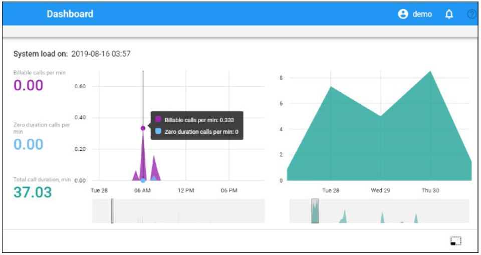
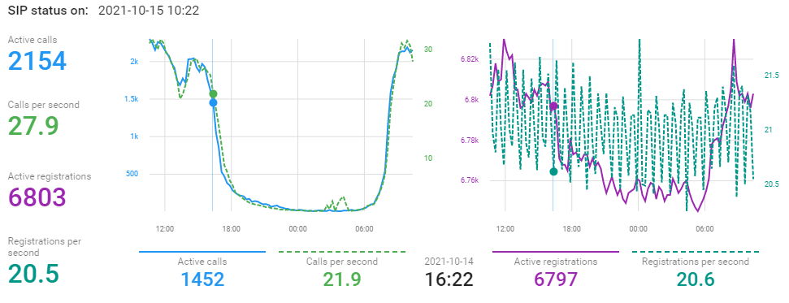
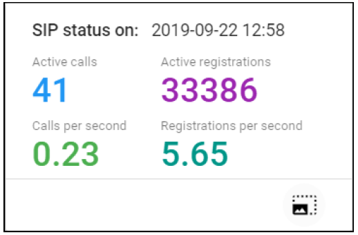
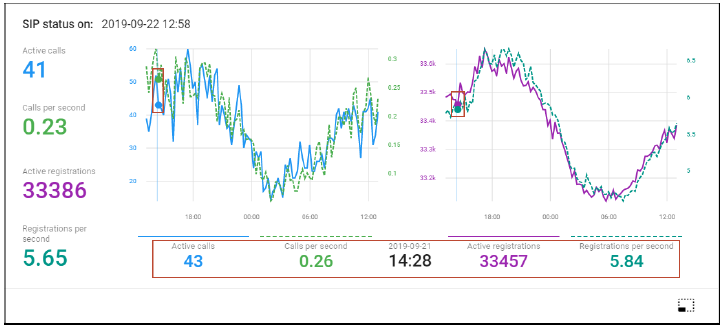

PortaBilling Server Health Monitoring
Entire system load
As a widget, these statistics are accessible from the Dashboard, including two graphs:
1. On the left is the number of registered calls by a productive system every 15 minutes
2. On the right, the graph indicates the total call duration
Data on both graphs is collected for the last three months.
Number of calls
A call will not be reflected on the graph if the disconnect time on the CDR does not fall within the past 15 minutes, due to an active call.
Zero duration calls
An unexpected high number of failed calls can be seen on the graph, showing possible problems in the system. By default, this graph displays statistics for the last 30 minutes.
System Load Overview:
VoIP network performance statistics
SIP status
SIP services provided for the last 24 hours can be viewed, helping to detect changes in your network.
There are four metrics, included in the calls and registration statistics:
- the number of active calls;
- the number of calls per second;
- the number of registered UAs;
- the number of registrations per second.
They are available as the SIP status widget on the Dashboard page.

The SIP status widget has a collapsed and extended view
In the, collapsed view, only the last measured data is shown
The extended view icludes statistics for an exact timestamp during 24 hours; left-hand shows call statistics,
right-hand shows the chart for registraions.

The figures below the chart shows the metrics' value for an exact timestamp, placed between the charts. When a specific time is highlighted
on one chart, the same time will be highlighted on the second chart, changing the values below.